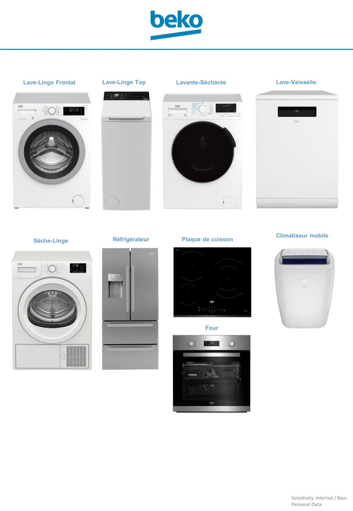

Lave-Linge FrontalLave-Linge TopLavante-SéchanteLave-VaisselleLave-VaisselleSèche-LingeRéfrigérateurPlaque de cuissonFourClimatiseur mobile
1 / 1Liens de ce document (9)
≡Lave vaisselle page accueilMenu · 16 liens≡Lave linge page accueilMenu · 13 liens≡Accueil lave linge TopMenu · 4 liens≡LLS page accueilMenu · 3 liensPDFSeche linge CHOIX RES OU PAC1 p.≡FROID page accueilMenu · 9 liens≡CUISSON page accueilMenu · 5 liens≡CUISSON Four page accueilMenu · 5 liensPDFCLIMATISEUR mobile page accueil1 p.